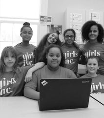

rhode futures foundation
From day one, rhode pledged a minimum of 1% of sales and ongoing team efforts to support organizations actively dismantling the barriers that impede women* in their careers and limit their access to healthcare, while helping them in pursuing their long-term goals. RFF partners with organizations that prioritize empowering women, especially those from marginalized communities, providing them with the essential resources to chart their own paths forward. *For all women, including non-binary, trans, non-cis, and all women-identified persons
our pillars
-
care for women
Give women acces to a wide variety of health services for full anatomy over their bodies to make empowered choices.
-
support for moms
Invest in resources for moms, motherlike figures, and caregivers that alleviate financial stress as they raise and support their families.
-
women in business
Provide acces to capital and coaching for women and non-binary owned business.
-
emergency response
Support organizations on the frontlines in times of crisis or urgent need, especially when women are disproportionately impacted.
Introducing the Support for Moms Fund
The Support for Moms Fund is a $1 million fund that invests in impactful organizations delivering guaranteed income and resources to new mothers, mother-like figures, and caregivers across the U.S. Together with our national network of 10 organizations, we’re providing much-needed support to moms, which in turn strengthens families and empowers communities.
LEARN MOREour ongoing partners
Girls Inc.
Girls Inc. is the preeminent girls leadership organization providing mentorship and programming to support girls across the U.S. and Canada. RFF supports Girls Inc.’s Mind+Body program, a health literacy initiative that promotes mental and physical well-being through movement, a self-esteem curriculum, and stress management.
 MORE ON GIRLS INC.birthFUND
We believe every woman and birthing person deserves equitable access to compassionate care. birthFUND advocates for and invests in midwifery care, promotes the inclusion of birth workers in the birthing experience, and provides holistic perinatal support and midwifery services to families in need.
MORE ON BIRTHFUNDBlack Mamas Matter Alliance
Black Mamas Matter Alliance, Inc. (BMMA) is a national network of Black women-led organizations and multi-disciplinary professionals that works across the full spectrum of maternal and reproductive health, operating at the national, state, and local levels to advance policy, promote holistic maternity care, and cultivate research to advance Black Maternal Health for Black women and birthing people.
MORE ON BMMAAcces Bridge
Access Bridge fills critical gaps in reproductive healthcare by strengthening U.S. emergency departments to serve as health safety nets. The program provides resources and treatment protocols for miscarriage, contraception, ectopic pregnancy, and more.
MORE ON ACCESS BRIDGEAccion Oppurtunity Fund
For over 25 years, Accion Opportunity Fund has provided financial support to small businesses predominantly owned by women, people of color, and immigrants. Accion Opportunity Fund believes that small businesses are the heart of the community, essential to local economic health, and create opportunities for individuals, families, and entire neighborhoods. Accion Opportunity Fund offers capital, resources, and coaching so these entrepreneurs can achieve long-term success.
MORE ON AOFour work in 2025
LA Wildfire $1 Million Relief for Moms, Caregivers, and Families
In response to the devastating wildfires in our hometown of Los Angeles, the rhode futures foundation committed $1 million to support local organizations providing emergency cash payments to relieve mothers, caregivers, and families displaced or deeply affected. Throughout January and February, we built on this commitment with an additional 1% of all online and LA pop-up sales going directly to these efforts.
LEARN MOREContact us
Have a question or feedback? We'd love to hear from you.